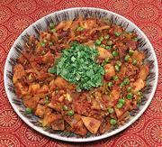

|
Kaima IdliIndia, South - Idli Kaima | ||||
| Serves: Effort: Sched: DoAhead: |
3 break *** 1-1/4 hrs Part |
A very popular dish in Tamil Nadu, made from leftover idlis - breakfast for three or dinner for two. For making Idlis, see our recipe Idli - Rice Cakes. | |||
|
7 9 1 1 1/2 3 sprig ------- 2 1/4 3/4 1/2 ------- 3 1 1/2 1/2 ------- 1/2 ar |
oz # in cl --- t t t t --- T t c T --- T |
Idli (1) Onion Tomatoes Chile, green (2) Ginger Garlic Curry Leaves (3) -- Seasoning Coriander seed Turmeric Chili Powder (4) Garam Masala (5) -------------- Oil (frying) Mustard Seeds (6) Green Peas Salt -- Garnish Lemon Juice Cilantro |
Prep - (35 min)
|
ibg_idlkai1 201114 inet - www.clovegarden.com
©Andrew Grygus - agryg@aaxnet.com - Linking to and
non-commercial use of this page is permitted.